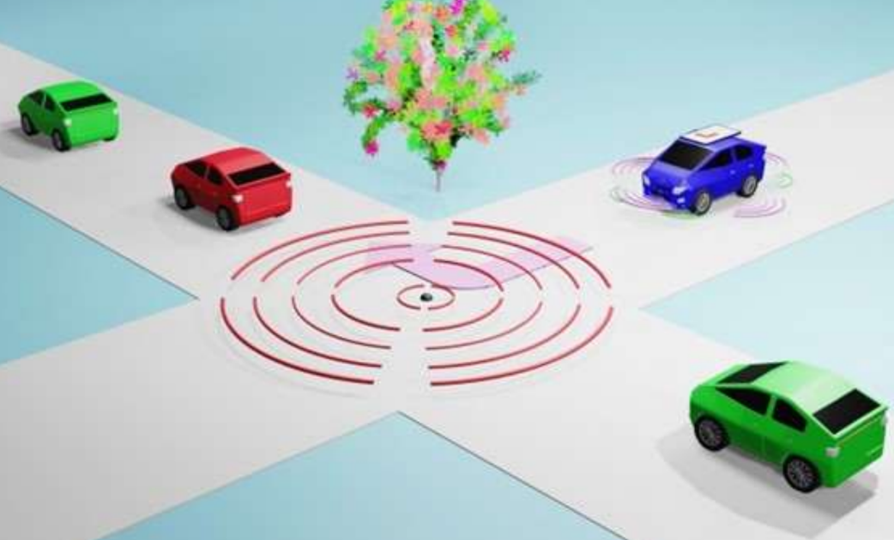
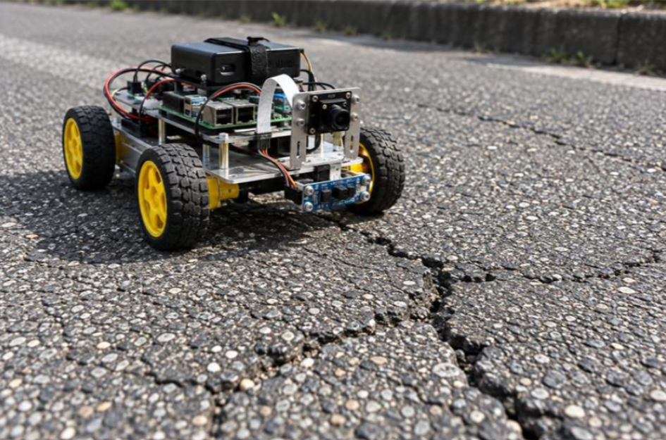
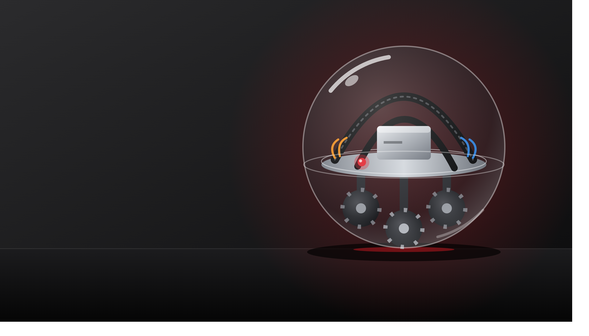
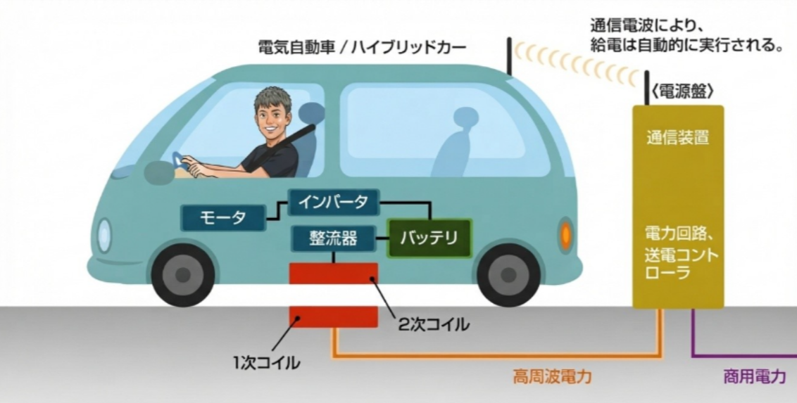

未来交通画像認識・AI
発表テーマ：AIで、移動をもっとスムーズに
渋滞や交通事故を減らすため、上空のカメラ映像と交通シミュレータを使い、複数台の車を安全に目的地まで自律走行させるAI交通システムを製作しました。車それぞれの目だけでは見えない道路全体の状況をAIが把握し、一台ずつに最適な道を指示します。実際に動く様子を、ぜひ展示でご覧ください。
2026年電子制御工学科の専門展のテーマは『未来交通』です。

渋滞や交通事故を減らすため、上空のカメラ映像と交通シミュレータを使い、複数台の車を安全に目的地まで自律走行させるAI交通システムを製作しました。車それぞれの目だけでは見えない道路全体の状況をAIが把握し、一台ずつに最適な道を指示します。実際に動く様子を、ぜひ展示でご覧ください。

道路のひび割れや凹凸は、事故につながる危険な異常です。私たちは、人手不足や点検の手間といった課題を解決するため、走りながら路面を撮影・検査し、異常を効率的に見つける路面点検ロボットを製作しました。仕組みと実際の動きを、ぜひ展示でご覧ください。

透明なアクリル球の内側に3つのオムニホイールを配置し、球体そのものを転がして前後・左右・斜めと360°自由に移動させる球体ロボットを製作しました。この動きを観光に活かし、移動すること自体が楽しい新しい体験を目指します。実際に動く様子を、ぜひ展示でご覧ください。

EVの普及には、充電設備の不足や充電時間の長さといった課題があります。私たちは、ケーブルを使わず、コイルから磁界を介して電力を伝える非接触充電に着目し、その仕組みを小型模型で実演します。車がワイヤレスで充電される様子を、ぜひ展示でご覧ください。